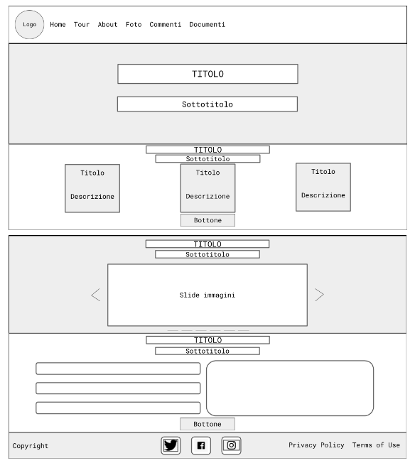

Struttura e Layout
1. Architettura del sito

Figura 1: Struttura del sito
2. Wireframe
Figura 2: Homepage
Figura 3: Tour
Figura 4: Pagine informazioni e About
Figura 5: Documenti
3. Look and Feel
a) Font. In tutto il sito ho usato prevalentemente “Robot Mono” monospace, sia per i titoli che per le descrizioni. Questo perché ricorda una macchina da scrivere e, proprio per l’idea di star raccontando una storia, ho pensato fosse il più adatto a livello di coerenza. Per il menù ho utilizzato, invece, il “Century Gothic”, facilmente leggibile e chiaro.
b) Palette di colori. Il “Lemon Chiffon” e l’arancione sono i colori predominanti nel sito. In contrasto con questi, per via della loro complementarità, ho utilizzato il viola. La scelta di questi colori è che, salvo il viola, ho voluto mantenere una coerenza tra quelli che sono prevalenti nei monumenti della città e quelli del sito. È presente anche il bianco e il “cyan-blue” per permettere ai colori e alle immagini di risaltare. In generale la scelta dei colori non è casuale, poiché vuole trasmettere un senso di armonia e tranquillità all’utente.
c) Elementi della pagina. Oltre alle molte immagini inserite per permettere all’utente di capire quale monumento deve cercare/quale posto sta visitando, il logo del sito è la skyline della città di Parma.